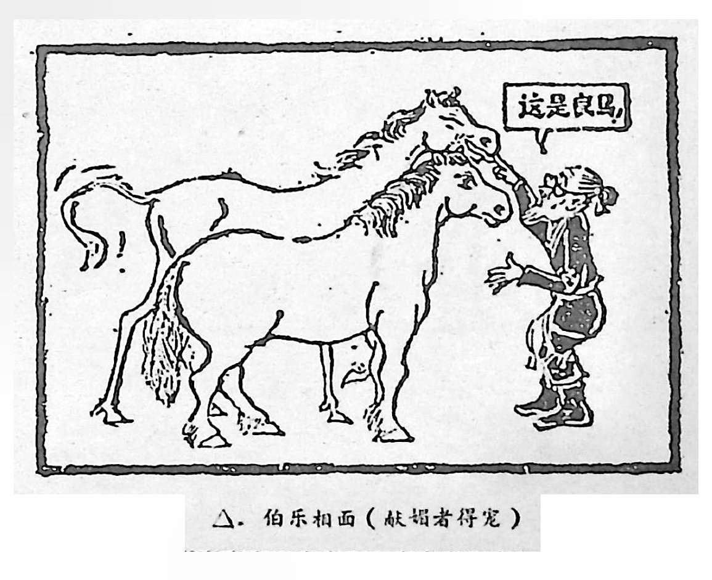

王乐天 《人事》1987年第7期（总第22期），封三
伯乐相面（献媚者得宠）
Bole Reads Faces (The Flatterer Wins Favour)
- Text in the drawing
- 这是良马！
This is a fine horse! - Description
- One horse nuzzles old Bole's cheek; he beams and declares it a fine horse, while a second horse stands by, unnoticed.
- Note
- Bole, the legendary judge of horses, stands for a leader who spots talent; here he is won over by flattery.
- Artist
- Wang Letian 王乐天
- Published in
- 《人事》1987年第7期（总第22期）, inside back cover
- Themes
- Talent and its neglect · Connections (guanxi) · Fable, legend and history · Anniversary drawings

Cite
Wang Letian, “伯乐相面（献媚者得宠）” [Bole Reads Faces (The Flatterer Wins Favour)], Renshi (Personnel) 《人事》, 1987, no. 7, inside back cover.